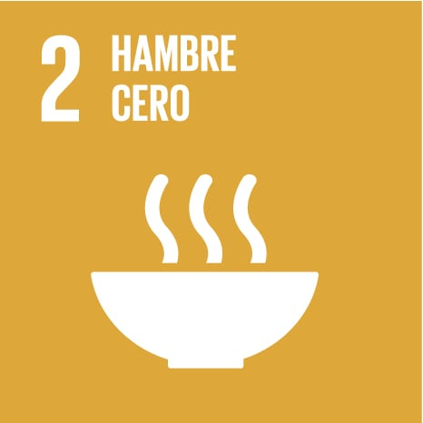

Cerca de 700 millones de personas, alrededor del 9 % de la población mundial, siguen viviendo en situación de pobreza extrema, con menos de 2,15 dólares al día. La mayoría vive en el África subsahariana y en Asia meridional. La pobreza no es solo falta de ingresos: también significa no tener acceso a una alimentación suficiente, a la educación, a la sanidad o a una vivienda digna. Los niños y las personas que viven en zonas rurales o en países en conflicto son los más afectados.
Volver al menú
Más de 700 millones de personas pasan hambre en el mundo y más de 2.000 millones no tienen acceso regular a una alimentación sana y suficiente. La desnutrición afecta a millones de niños menores de cinco años y frena su crecimiento y su desarrollo. A la vez, la agricultura es la principal fuente de ingresos de muchas familias rurales, por lo que apostar por una producción sostenible es clave para alimentar a la población sin dañar el planeta.
Volver al menú